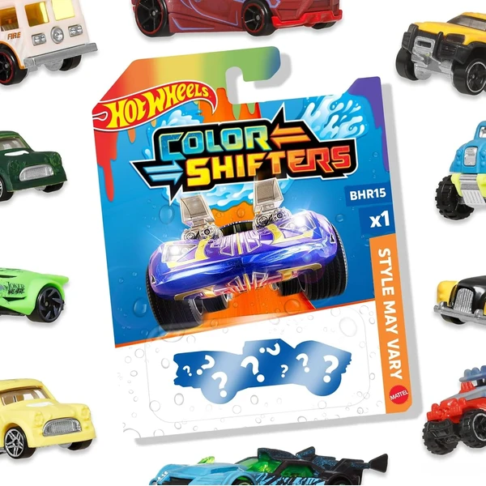
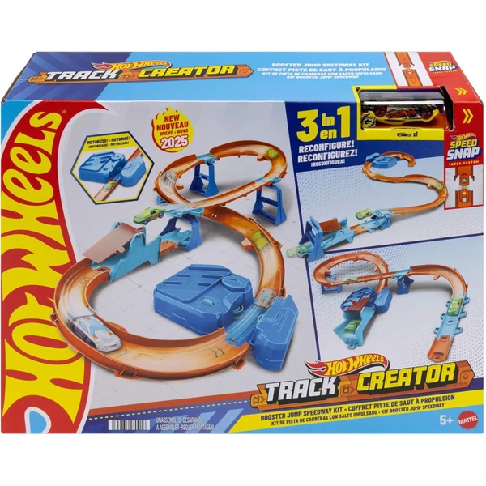
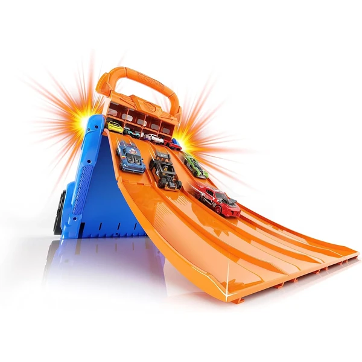

Hot Wheels Pack de 10 Vehículos
Un pack de 10 coches Hot Wheels a escala 1:64 con modelos surtidos, práctico para tener una base de colección variada desde el primer momento.
⭐ ¿Por qué nos gusta?
- ✔ 10 coches en un mismo pack.
- ✔ Escala 1:64, acabados detallados.
- ✔ Buena variedad para intercambiar con amigos.
💬 Lo que más destacan las familias
Muchos padres coinciden en que es de las formas más rápidas de tener un buen surtido para empezar a coleccionar. La variedad de modelos también hace que siempre aparezca algún favorito nuevo.
Ver en Amazon

Hot Wheels Pack de 2 Coches
Un pack de 2 coches Hot Wheels a escala 1:64 con acabados clásicos, ideal para completar modelos concretos sin comprar un pack grande.
⭐ ¿Por qué nos gusta?
- ✔ 2 coches de acabado clásico.
- ✔ Escala 1:64, diseños detallados.
- ✔ Formato mínimo para completar huecos de colección.
💬 Lo que más destacan las familias
Se repite bastante el comentario de que resulta práctico para hacerse con un modelo concreto sin gastar en un pack grande. Los acabados clásicos también gustan a los coleccionistas más veteranos.
Ver en Amazon

Hot Wheels Pack de 5 Coches
Un pack de 5 coches Hot Wheels a escala 1:64 con temáticas variadas, pensado para seguir ampliando la colección sin gastar mucho de golpe.
⭐ ¿Por qué nos gusta?
- ✔ 5 coches con temáticas distintas.
- ✔ Escala 1:64, detalles auténticos.
- ✔ Formato intermedio, fácil de combinar.
💬 Lo que más destacan las familias
Muchos padres destacan que este formato es un término medio cómodo entre el pack pequeño y el grande. Las temáticas variadas también ayudan a encontrar el modelo que más engancha en cada caso.
Ver en Amazon

Hot Wheels Caja de Acrobacias Deluxe
Una caja de pista con curvas inclinadas, zona de choques y dos coches incluidos, pensada para guardarse plegada en su propia base.
⭐ ¿Por qué nos gusta?
- ✔ Más de 3 formas de montar la pista.
- ✔ Incluye 2 coches para jugar de inmediato.
- ✔ Se guarda plegada, sin piezas sueltas.
💬 Lo que más destacan las familias
Lo que más suele destacarse es lo cómoda que resulta para guardar y transportar entre casas o al ir a jugar con amigos. Poder montarla de distintas formas también alarga su vida útil.
Ver en Amazon

Hot Wheels Torre de Choques en el Aire
Una torre de más de 80 cm con propulsor a pilas para lanzar los coches y hacer saltos, con capacidad para más de 20 vehículos aparcados. Se pliega para guardar con facilidad.
⭐ ¿Por qué nos gusta?
- ✔ Propulsor a pilas para saltos en el aire.
- ✔ Aparcamiento para más de 20 coches.
- ✔ Diseño plegable, fácil de guardar.
💬 Lo que más destacan las familias
Muchos padres valoran que el propulsor añada emoción extra a los saltos frente a las pistas sin motor. El tamaño plegable también facilita guardarla sin que ocupe demasiado sitio.
Ver en Amazon

Hot Wheels Pack de 3 Coches
Un pack de 3 coches Hot Wheels a escala 1:64 con acabados clásicos, un término medio entre el pack individual y los packs más grandes.
⭐ ¿Por qué nos gusta?
- ✔ 3 coches de estilo auténtico.
- ✔ Escala 1:64, detalles llamativos.
- ✔ Buen equilibrio entre precio y cantidad.
💬 Lo que más destacan las familias
Entre los comentarios más habituales aparece que es un formato cómodo cuando no se quiere gastar en un pack grande pero sí ampliar algo la colección. El acabado de los modelos también convence a los coleccionistas más exigentes.
Ver en Amazon

Hot Wheels Track Builder Lata de Gasolina
Una caja de pistas con forma de bidón que se transforma en parte del circuito, compatible con otros sets de Hot Wheels. Incluye un vehículo para empezar directamente.
⭐ ¿Por qué nos gusta?
- ✔ El envase forma parte de la pista.
- ✔ Compatible con otros sets Hot Wheels.
- ✔ Incluye un coche para jugar ya.
💬 Lo que más destacan las familias
Se repite bastante el comentario de que aprovechar la propia caja como pista es un acierto de diseño. La compatibilidad con otros circuitos también permite ir ampliando el montaje poco a poco.
Ver en Amazon

Hot Wheels Color Shifters
Un coche Hot Wheels que cambia de color con agua templada y recupera su tono original con agua fría, un efecto que se puede repetir tantas veces como se quiera.
⭐ ¿Por qué nos gusta?
- ✔ Cambia de color con agua templada.
- ✔ Vuelve a su color con agua fría.
- ✔ Efecto reutilizable sin límite.
💬 Lo que más destacan las familias
Muchos padres cuentan que el cambio de color siempre sorprende, incluso después de probarlo varias veces. Es un extra que da un punto distinto al juego habitual con coches.
Ver en Amazon

Hot Wheels City Mega Garaje
Un garaje de 4 niveles con montacargas en espiral de manivela, capacidad para más de 60 coches y varios puntos de conexión para ampliar el montaje. Incluye un vehículo.
⭐ ¿Por qué nos gusta?
- ✔ Montacargas en espiral accionado a mano.
- ✔ Almacena más de 60 coches.
- ✔ Se conecta con otras pistas Hot Wheels.
💬 Lo que más destacan las familias
Muchos padres destacan que el montacargas manual es de lo más entretenido del set, ya que los peques disfrutan subiendo los coches ellos mismos. La gran capacidad también ayuda a mantener ordenada una colección grande.
Ver en Amazon

Hot Wheels Premium Car Culture Pack 2
Un pack de 2 coches Hot Wheels Premium con neumáticos Real Riders y chasis metálico, pensado para coleccionistas que buscan un acabado más cuidado.
⭐ ¿Por qué nos gusta?
- ✔ Neumáticos Real Riders más realistas.
- ✔ Chasis de metal, acabado premium.
- ✔ 2 vehículos con temáticas emparejadas.
💬 Lo que más destacan las familias
Lo que más suele gustar es que el acabado se nota mucho más cuidado que en la gama estándar, algo que valoran especialmente los coleccionistas. El chasis metálico también aporta una sensación de mayor calidad.
Ver en Amazon

Hot Wheels Fórmula 1 Pack de 5
Un pack de 5 coches de Fórmula 1 a escala 1:64 con licencia oficial, válidos tanto para jugar como para exponer en una estantería.
⭐ ¿Por qué nos gusta?
- ✔ 5 coches de F1 con licencia oficial.
- ✔ Escala 1:64, detalles auténticos.
- ✔ Sirven para jugar o para coleccionar.
💬 Lo que más destacan las familias
Entre los comentarios más habituales aparece lo bien que quedan expuestos gracias a su acabado detallado. Tener coches de Fórmula 1 reconocibles también engancha mucho a los fans de las carreras.
Ver en Amazon

Hot Wheels Circuito Supersalto
Un set de pistas con propulsor motorizado que impulsa los coches para hacer acrobacias, con al menos 3 configuraciones distintas posibles. Incluye un coche a escala 1:64.
⭐ ¿Por qué nos gusta?
- ✔ Propulsor motorizado para más potencia.
- ✔ Al menos 3 diseños distintos de pista.
- ✔ Compatible con pistas electrónicas antiguas.
💬 Lo que más destacan las familias
Muchos padres valoran que el propulsor motorizado dé acrobacias más vistosas que los propulsores manuales. Tener varios diseños posibles también alarga bastante la vida útil del set.
Ver en Amazon

Cefa Toys Guardacoches Lanzador
Un guardacoches 2 en 1 con 4 pistas de lanzamiento y capacidad para 20 coches Hot Wheels, con asa incluida para llevarlo a cualquier parte.
⭐ ¿Por qué nos gusta?
- ✔ 4 pistas para lanzar hasta 4 coches a la vez.
- ✔ Guarda hasta 20 coches Hot Wheels.
- ✔ Asa de transporte incluida.
💬 Lo que más destacan las familias
Muchos padres destacan que combina bien el almacenaje con el juego de lanzamiento en un formato compacto. El asa también facilita llevarlo de viaje o a casa de amigos.
Ver en Amazon